東京都中葛西 プレゼン話し方研究所㈱様のオフィス・ご自宅のハウスクリーニング、エアコンプロフェッショナルクリーニング、窓・サッシ・網戸プロフェッショナルクリーニングをしました!
東京都中葛西の「プレゼン話し方研究所株式会社様」オフィス・ご自宅のハウスクリーニング、水回りプロフェッショナルクリーニング、窓・サッシ・網戸プロフェッショナルクリーニング、エアコンプロフェッショナルクリーニングを全てまとめて、DAIZEN各種エキスパートを4名×2日間投入して実施しました!プレゼン話し方研究所株式会社様の中葛西本社オフィスクリーニング、港区芝事務所のオフィスクリーニングを毎年実施させて頂いております、心より感謝します!恒例クリーニングではございますが、水回り、エアコン、窓・サッシ・網戸、室内各所、建具、玄関、エントランスなど各所、どうしても堆積した汚れは付着しておりますので、エキスパート4名がソレゾレの特殊テクニックを駆使して、隅々まで各所を丁寧に、綺麗にクリーニングして仕上げました!また今回もとてもスッキリと綺麗になり、たいへんお喜び頂けました!ぜひDAIZENの各種プロフェッショナルクリーニングをご体験下さい、宜しくお願いいたします!
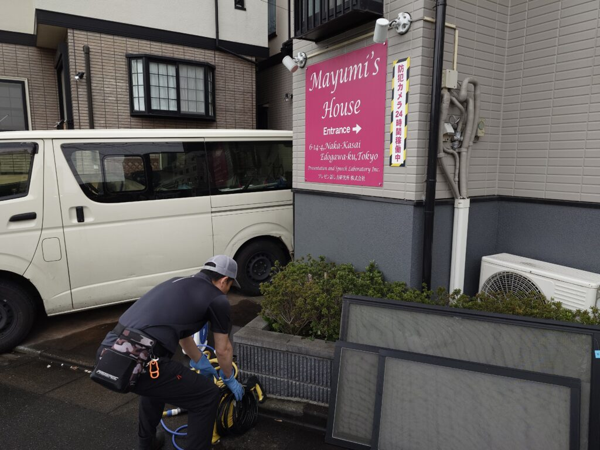
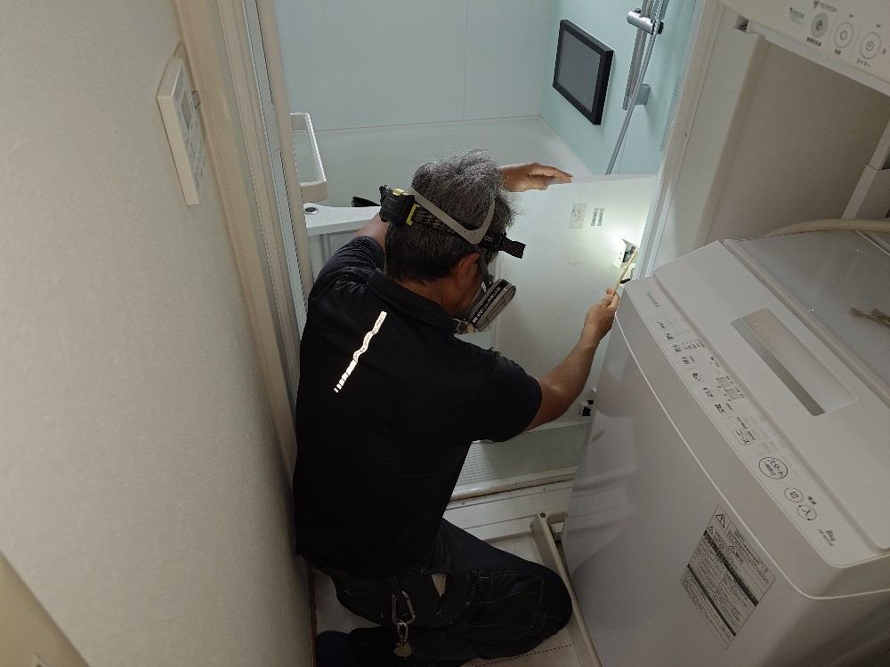
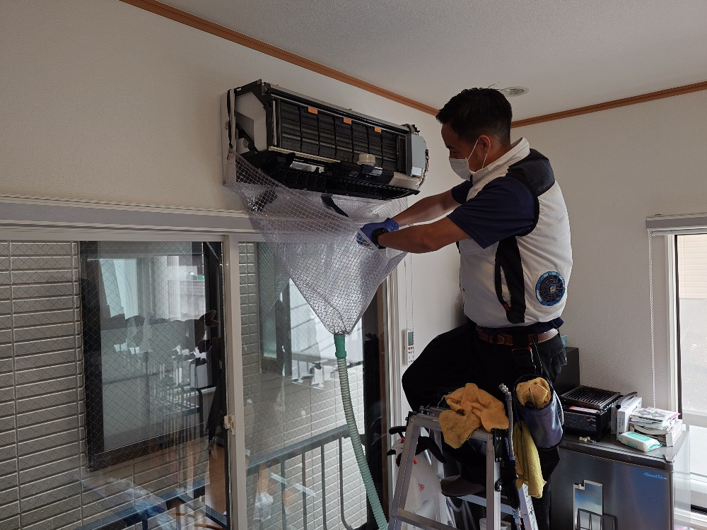
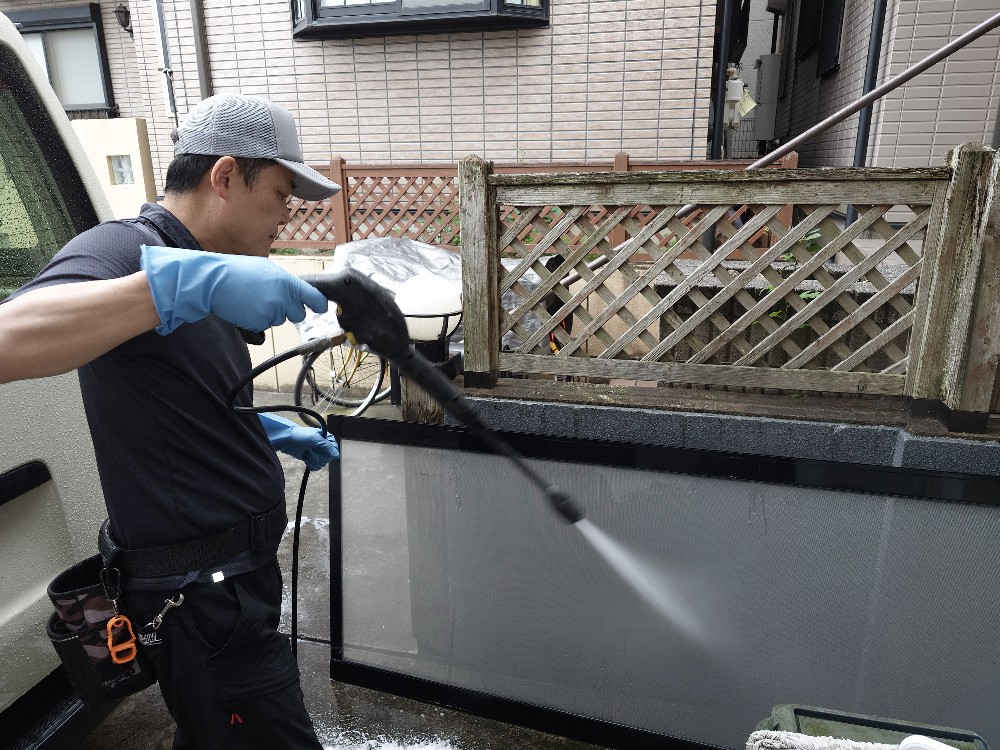
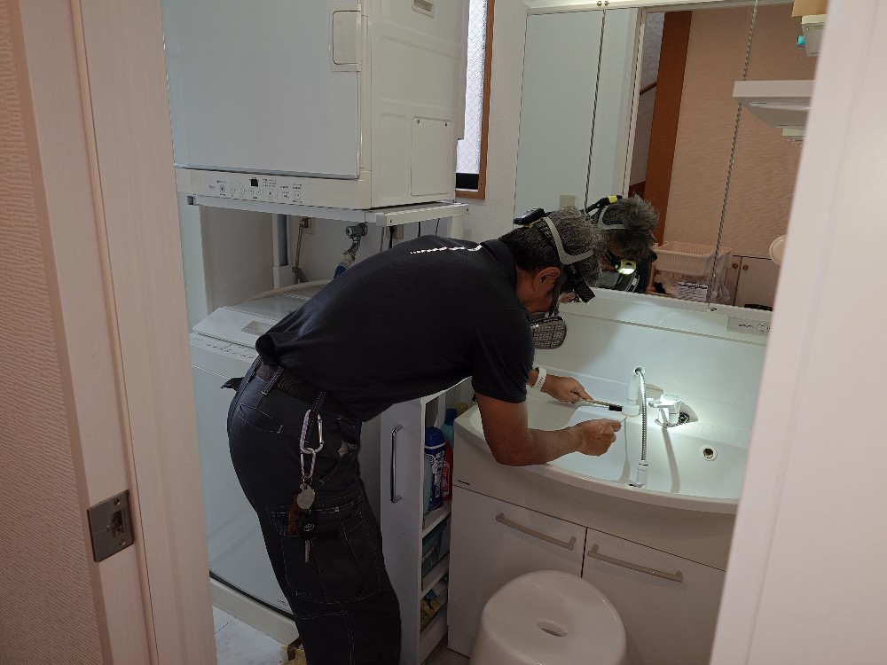
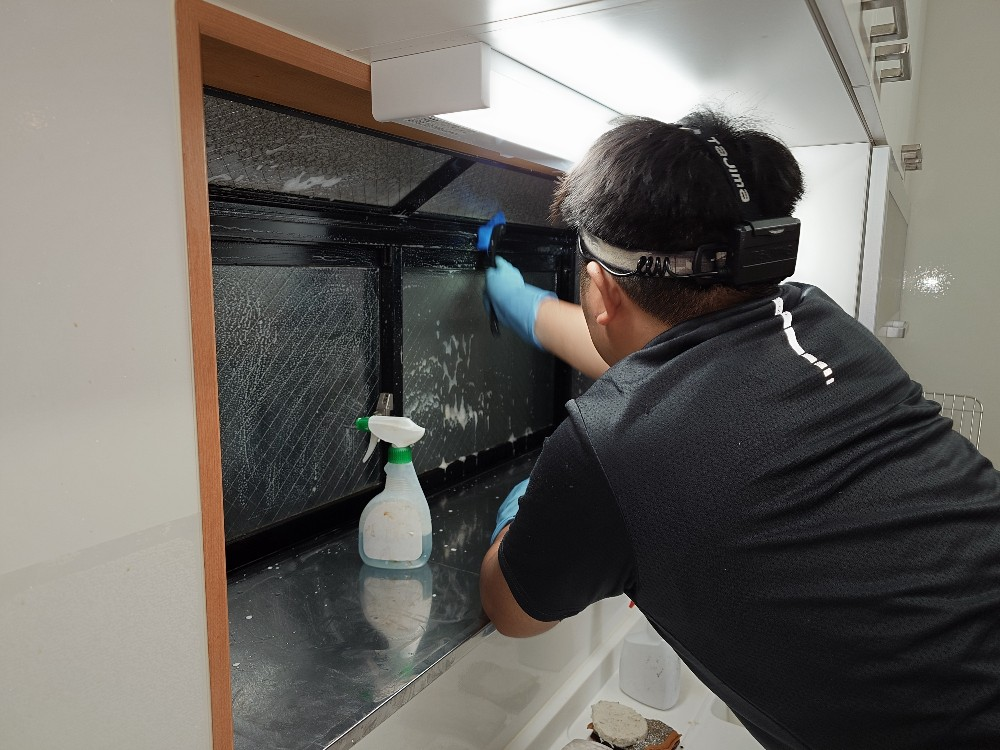
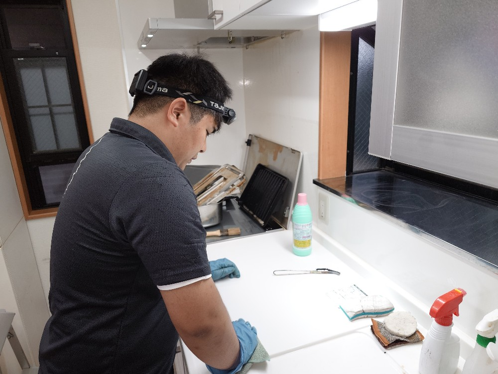
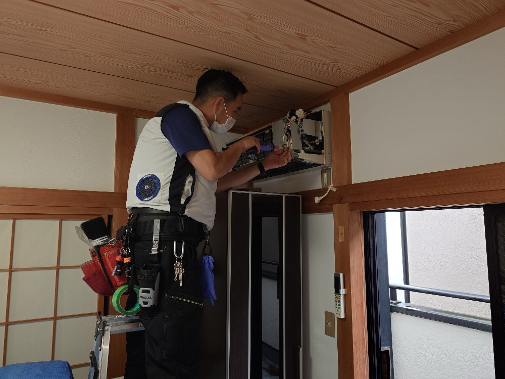
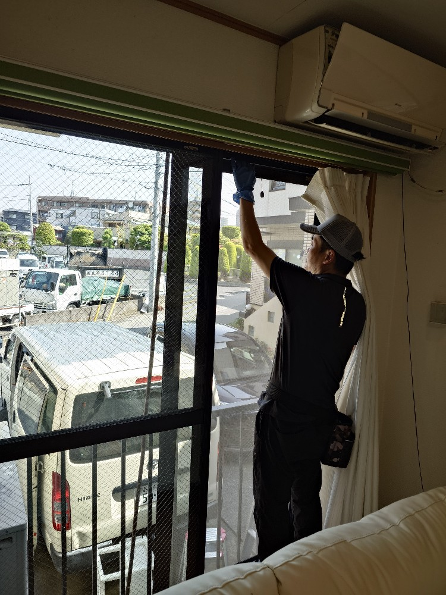
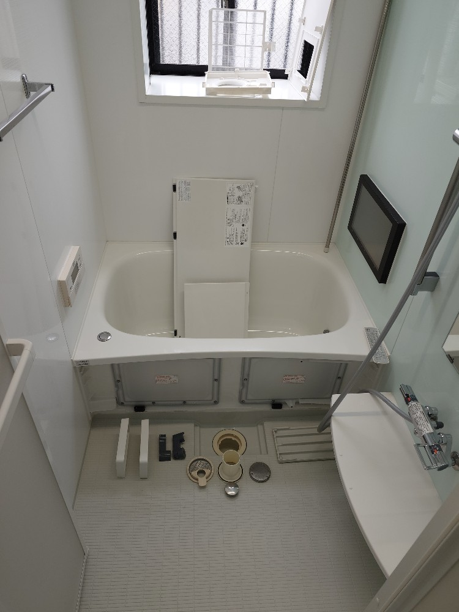
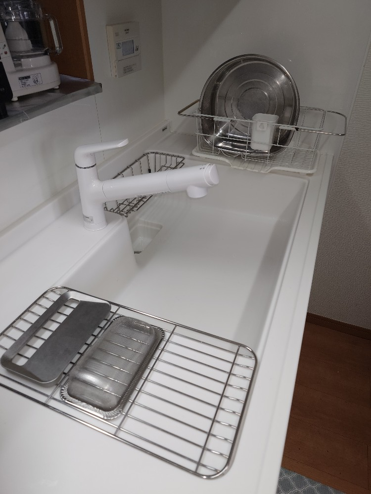